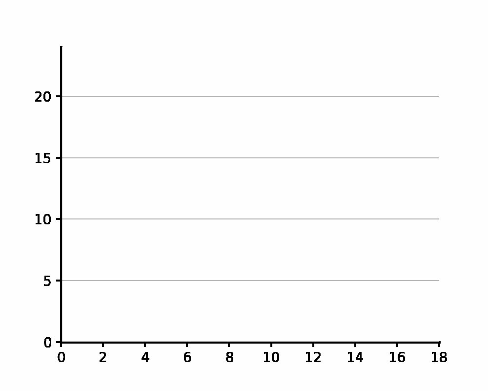

2.3. First Visualizations: Scatter Plots and Histograms#
Below you can find the animated GIF for the ball-drop histogram and the flaschards for Section 2.3 of Foundations of Data Science with Python
2.3.1. Ball-Drop Histogram#

(See the code to generate this in the Jupyter Notebook to Generate Ball Drop Graph).
Self-Assessment:
The following questions can be used to check your understanding of the material covered in this chapter:
---------------------------------------------------------------------------
HTTPError Traceback (most recent call last)
Cell In[5], line 1
----> 1 display_quiz(git_url+'first-vis.json')
File /Applications/anaconda3/lib/python3.9/site-packages/jupyterquiz/dynamic.py:169, in display_quiz(ref, num, shuffle_questions, shuffle_answers, preserve_responses, border_radius, question_alignment, max_width, colors)
167 script+=text
168 else:
--> 169 file = urllib.request.urlopen(url)
170 for line in file:
171 script += line.decode("utf-8")
File /Applications/anaconda3/lib/python3.9/urllib/request.py:214, in urlopen(url, data, timeout, cafile, capath, cadefault, context)
212 else:
213 opener = _opener
--> 214 return opener.open(url, data, timeout)
File /Applications/anaconda3/lib/python3.9/urllib/request.py:523, in OpenerDirector.open(self, fullurl, data, timeout)
521 for processor in self.process_response.get(protocol, []):
522 meth = getattr(processor, meth_name)
--> 523 response = meth(req, response)
525 return response
File /Applications/anaconda3/lib/python3.9/urllib/request.py:632, in HTTPErrorProcessor.http_response(self, request, response)
629 # According to RFC 2616, "2xx" code indicates that the client's
630 # request was successfully received, understood, and accepted.
631 if not (200 <= code < 300):
--> 632 response = self.parent.error(
633 'http', request, response, code, msg, hdrs)
635 return response
File /Applications/anaconda3/lib/python3.9/urllib/request.py:561, in OpenerDirector.error(self, proto, *args)
559 if http_err:
560 args = (dict, 'default', 'http_error_default') + orig_args
--> 561 return self._call_chain(*args)
File /Applications/anaconda3/lib/python3.9/urllib/request.py:494, in OpenerDirector._call_chain(self, chain, kind, meth_name, *args)
492 for handler in handlers:
493 func = getattr(handler, meth_name)
--> 494 result = func(*args)
495 if result is not None:
496 return result
File /Applications/anaconda3/lib/python3.9/urllib/request.py:641, in HTTPDefaultErrorHandler.http_error_default(self, req, fp, code, msg, hdrs)
640 def http_error_default(self, req, fp, code, msg, hdrs):
--> 641 raise HTTPError(req.full_url, code, msg, hdrs, fp)
HTTPError: HTTP Error 404: Not Found
---------------------------------------------------------------------------
HTTPError Traceback (most recent call last)
Cell In[6], line 4
1 from jupytercards import display_flashcards
3 github='https://raw.githubusercontent.com/jmshea/Foundations-of-Data-Science-with-Python/main/02-first-stats/flashcards/'
----> 4 display_flashcards(github+'first-vis.json')
File /Applications/anaconda3/lib/python3.9/site-packages/jupytercards/dynamic.py:168, in display_flashcards(ref, keyControl, grabFocus, front_colors, back_colors, text_colors)
166 loadData += open_url(url).read()
167 else:
--> 168 file = urllib.request.urlopen(url)
170 for line in file:
171 loadData += line.decode("utf-8")
File /Applications/anaconda3/lib/python3.9/urllib/request.py:214, in urlopen(url, data, timeout, cafile, capath, cadefault, context)
212 else:
213 opener = _opener
--> 214 return opener.open(url, data, timeout)
File /Applications/anaconda3/lib/python3.9/urllib/request.py:523, in OpenerDirector.open(self, fullurl, data, timeout)
521 for processor in self.process_response.get(protocol, []):
522 meth = getattr(processor, meth_name)
--> 523 response = meth(req, response)
525 return response
File /Applications/anaconda3/lib/python3.9/urllib/request.py:632, in HTTPErrorProcessor.http_response(self, request, response)
629 # According to RFC 2616, "2xx" code indicates that the client's
630 # request was successfully received, understood, and accepted.
631 if not (200 <= code < 300):
--> 632 response = self.parent.error(
633 'http', request, response, code, msg, hdrs)
635 return response
File /Applications/anaconda3/lib/python3.9/urllib/request.py:561, in OpenerDirector.error(self, proto, *args)
559 if http_err:
560 args = (dict, 'default', 'http_error_default') + orig_args
--> 561 return self._call_chain(*args)
File /Applications/anaconda3/lib/python3.9/urllib/request.py:494, in OpenerDirector._call_chain(self, chain, kind, meth_name, *args)
492 for handler in handlers:
493 func = getattr(handler, meth_name)
--> 494 result = func(*args)
495 if result is not None:
496 return result
File /Applications/anaconda3/lib/python3.9/urllib/request.py:641, in HTTPDefaultErrorHandler.http_error_default(self, req, fp, code, msg, hdrs)
640 def http_error_default(self, req, fp, code, msg, hdrs):
--> 641 raise HTTPError(req.full_url, code, msg, hdrs, fp)
HTTPError: HTTP Error 404: Not Found